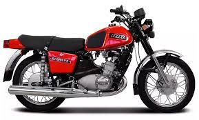
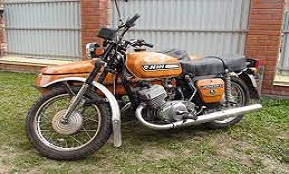

Советские мотоциклы и Альфа


Иж Юпитер-5 (Иж 6.1140-2) — дорожный мотоцикл среднего класса, предназначен для передвижения на дорогах, имеющих разное покрытие. Выпускался Ижевским машиностроительным заводом с 1985 до 2007 года. К мотоциклу можно присоединять боковой грузовой или пассажирский прицеп, а также универсальный грузовой модуль.Масса бокового прицепа — 99 кг, грузового модуля — 48 кг. Мотоцикл сохранил экипажную часть мотоцикла «ИЖ Планета-5» но, как и все «Юпитеры», отличался мотором — он оснащался двухцилиндровым двухтактным двигателем с возвратно-петлевой четырёхканальной продувкой, приготовлением топливо-воздушной смеси в карбюраторе и воспламенением её от батарейной системы зажигания. Педаль ножного переключения передач и педаль кикстартера расположены с левой стороны картера силового агрегата. «Иж-Юпитер-5», как и все предыдущие двухцилиндровые модели, оснащался механизмом автоматического выключения сцепления: перед переключением передач необязательно выключать сцепление рукояткой на руле, разобщение двигателя и трансмиссии происходит при нажатии на педаль выбора передачи.